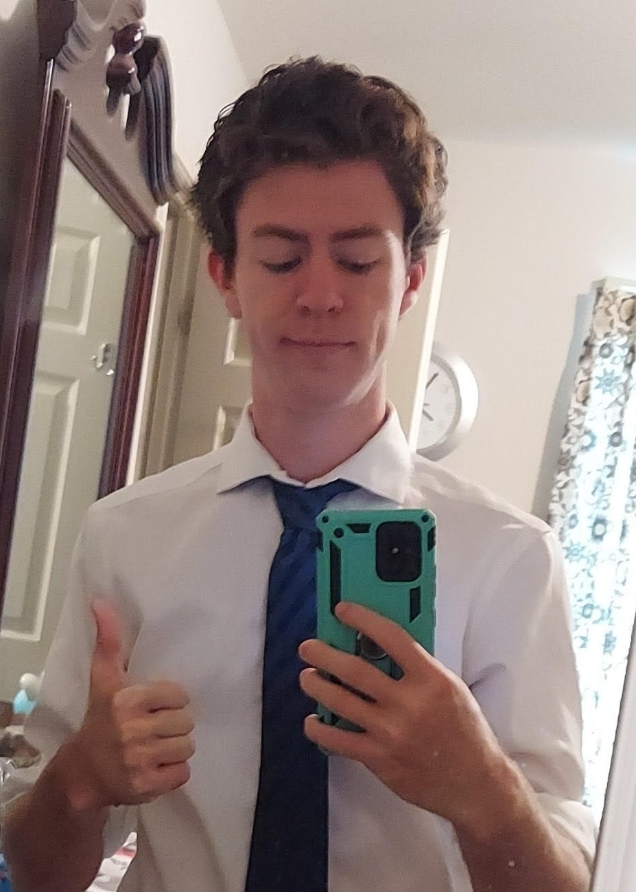

Hi, my name is Lee Forbes. I recently graduated from The University of Texas at Austin with a BS in Computer Science.
My hobbies include skateboarding, ultimate frisbee, Spikeball, and video games.
I have had the honor to work at Omni Flow Computers, Blackbaud, iD Tech, Vans, Cane's, and [your company can be here too].
My resume can be accessed here.
Feel free to contact me at:
📧 lee.a.forbes@gmail.com

Look around! Stay a while! My site includes many of my side projects I have worked on over the years including UT Runner, Photo Viewer Reborn, a full beginning Java tutorial with examples and labs. There is also a link to my old website that contains my even earlier, possibly embarassing, projects.